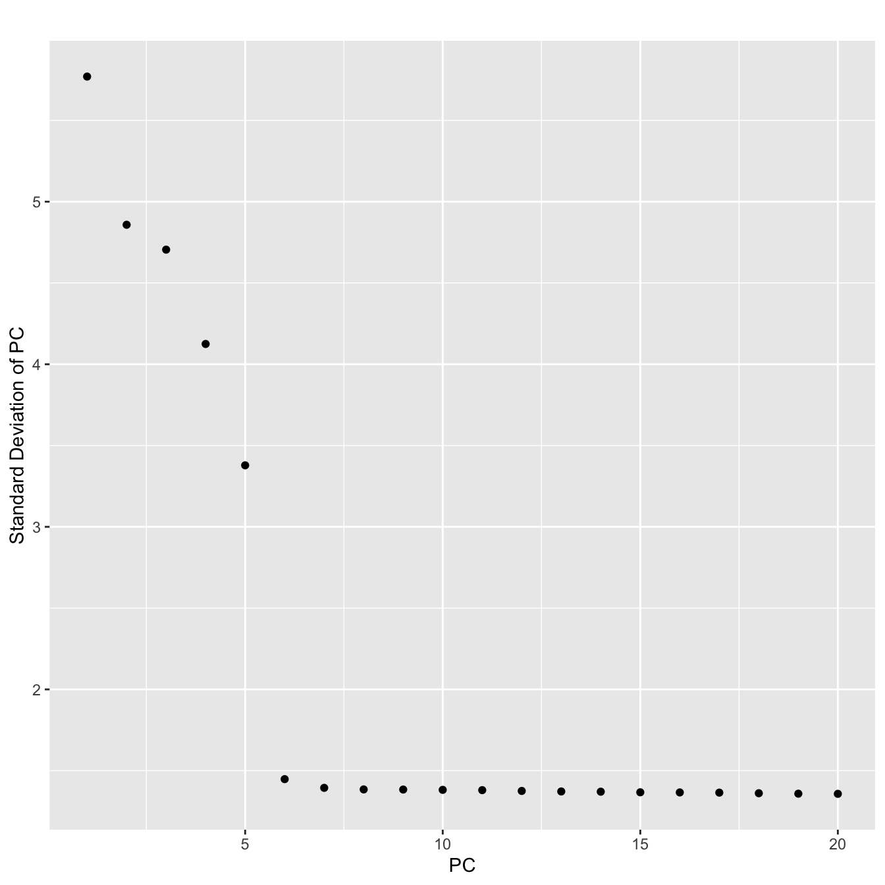
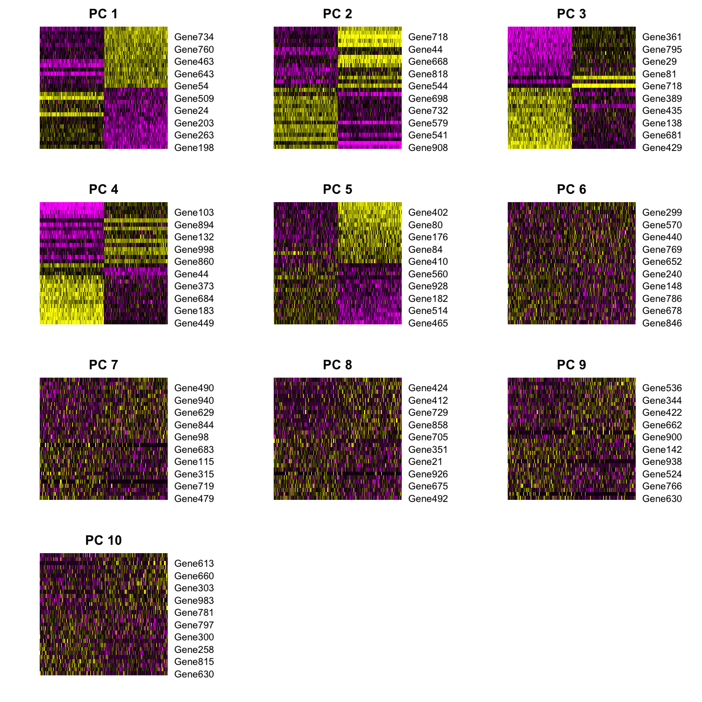
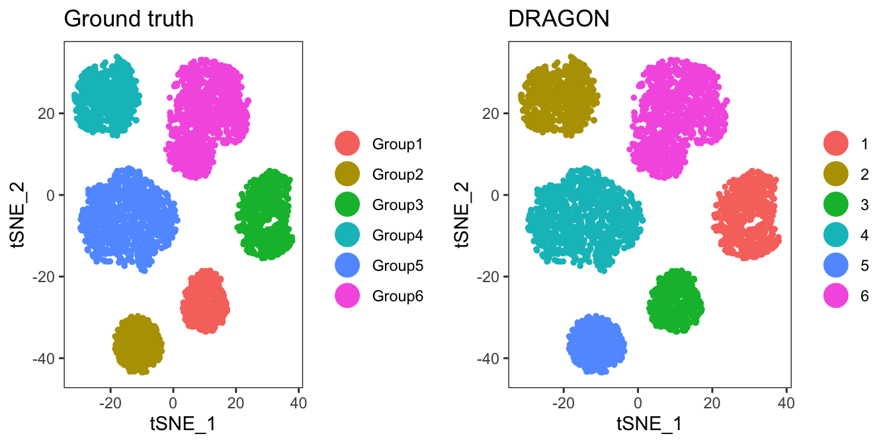
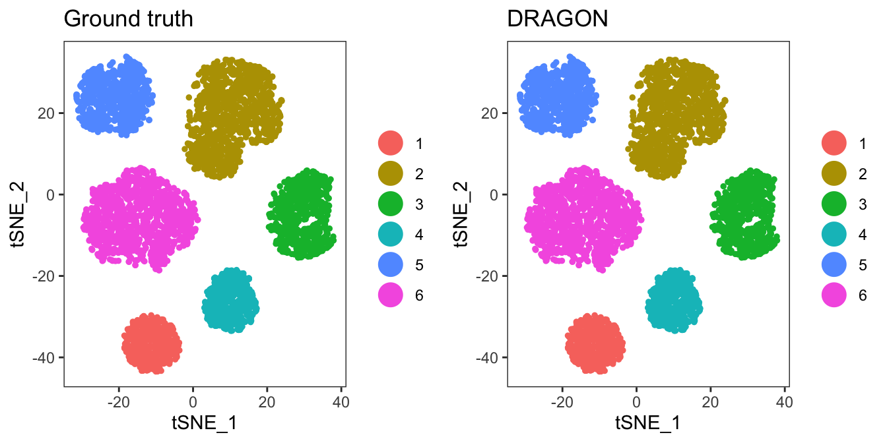
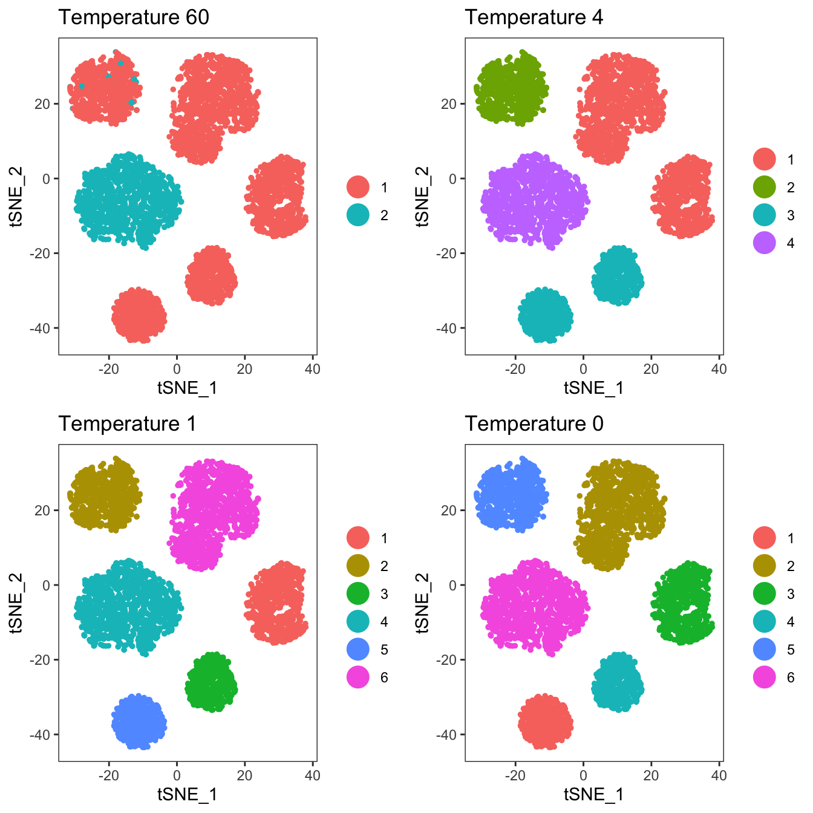

dragonsc.RmdDeteRminisitic Annealing Gaussian mixture mOdels for clusteriNg Single-Cell RNAseq (DRAGONsc) data is a clustering algorithm for single-cell RNAseq built upon the statistical framework of Gaussian mixture models and the concept of deterministic annealing. Analagous to the physical process of annealing, DRAGON uses a temperature parameter to put a constraint on the minimum entropy of the clustering solution. At each temperature, DRAGON performs maximum likelihood estimation to ascertain the paramaters of a Gaussian mixture model at that temperature. This allows us to define the “strongest” divisions in the data at higher temperatures, and to reveal more subtle differences as we gradually cool the temperature. This framework also allows us to split clusters in a statistically meaningful way as we reduce the temperature.
If you’re into the math behind this, check out our publication (coming to a journal near you soon), and the great work of Ken Rose.
Here, we demonstrate standard use of DRAGON on a simulated dataset. We do this in the following steps:
First, we simulate data to use with splatter. Alternatively we can bypass this step with a pre-simulated dataset that I’ve included with the package.
suppressMessages({
library(splatter)
library(dragonsc)
library(Seurat)
})
#Create parameters and simulate data
sc.params <- newSplatParams(nGenes=1000,batchCells=5000)
sim.groups <- splatSimulate(params=sc.params,method="groups",group.prob=c(0.10,0.10,0.15,0.15,0.25,0.25),de.prob=c(0.3,0.2,0.2,0.1,0.2,0.1),verbose=F)
sim.groups## class: SingleCellExperiment
## dim: 1000 5000
## metadata(1): Params
## assays(6): BatchCellMeans BaseCellMeans ... TrueCounts counts
## rownames(1000): Gene1 Gene2 ... Gene999 Gene1000
## rowData names(10): Gene BaseGeneMean ... DEFacGroup5 DEFacGroup6
## colnames(5000): Cell1 Cell2 ... Cell4999 Cell5000
## colData names(4): Cell Batch Group ExpLibSize
## reducedDimNames(0):
## spikeNames(0):This will create some simulated data consisting of 6 clusters, with various fractions of genes differentially expressed between clusters.
Now that we’ve simlulated some data, we will pass it through a standard Seurat workflow (using v2.3.4). Our goal is to generate a principal component analysis, and determine how many principal compnents we will use include for DRAGON cluster. We will also create a TSNE plot to visualize the clusters later.
#Pass simulated data to Seurat
ser <- CreateSeuratObject(raw.data=assays(sim.groups)$counts)
#Normal Seurat workflow
ser <- NormalizeData(ser)
ser <- ScaleData(ser)## Scaling data matrixser@var.genes <- rownames(ser@raw.data)
#We will pretend like the 1000 simulated genes are the "variable genes",
#and we will skip FindVariableGenes from Seurat
ser <- RunPCA(ser,do.print=FALSE)
PCElbowPlot(ser)

#Looks like the first 6 PCs capture most of the variance
#We will include the first 7 since we like to live dangerously
ser <- RunTSNE(ser,dims.use=1:7)
#Add the simulated data IDs to the Seurat object
data.to.add <- colData(sim.groups)$Group
names(data.to.add) <- ser@cell.names
ser <- AddMetaData(ser,metadata=data.to.add,col.name="real_id")With the PCA done, we will now perfrom the DRAGON clustering using the reduced dimensionality of the data. But first, we need to determine a starting temperature.
#Seurat stores PCA results in the dimensionality reduction slot "dr".
pcs.for.dragon <- ser@dr$pca@cell.embeddings[,1:7]
#Our criterion for splitting a cluster is 2 times the first
#eigenvalue of the covariance matrix, as per below
est.temp <- eigen(cov(pcs.for.dragon))$values[[1]]*2
#We will strat 10% below the value of est.temp
int.temp <- est.temp-(est.temp*0.1)
#Next, we set up a series of annealing steps where we progressively decrease the temperature.
annealing.steps <- data.frame("step"=cbind(1+c(0:11)),"temperature"=c(int.temp*exp(-(0:10)*0.45),0))
#Then we run the algorithm! It will create a folder called "dragon_intermediate_files" since save.intermediate.files=TRUE
setwd("/Users/arc85/Desktop/")
overall.clustering.soln <- dragonsc(pca.components=pcs.for.dragon,temp.decay.steps=annealing.steps,max.iterations=20,delta.log.likelihood=1e-6,max.clusters=6,save.intermediate.files=TRUE,num.cores=2,verbose=TRUE)## [1] "Initializing DRAGON clustering at temperature=60"
## [1] "Starting loop 1 at temperature=60"
## [1] "Current log likelihood=-5836.81597342153"
## [1] "Current log likelihood=-5836.42383327996"
## [1] "Current log likelihood=-5836.32482152013"
## [1] "Current log likelihood=-5836.2940279079"
## [1] "Current log likelihood=-5836.2838051644"
## [1] "Current log likelihood=-5836.28005327516"
## [1] "Current log likelihood=-5836.27834691306"
## [1] "Current log likelihood=-5836.27723866244"
## [1] "Current log likelihood=-5836.27622655925"
## [1] "Current log likelihood=-5836.27511209313"
## [1] "Current log likelihood=-5836.27379173256"
## [1] "Current log likelihood=-5836.27218684643"
## [1] "Current log likelihood=-5836.27021830949"
## [1] "Current log likelihood=-5836.26779546624"
## [1] "Current log likelihood=-5836.26480943315"
## [1] "Current log likelihood=-5836.26112728852"
## [1] "Current log likelihood=-5836.25658583258"
## [1] "Current log likelihood=-5836.25098428177"
## [1] "Current log likelihood=-5836.24407545874"
## [1] "Current log likelihood=-5836.2355550679"
## [1] "Completed loop 1 at temperature=60"
## [1] "Starting loop 2 at temperature=4"
## [1] "Current log likelihood=-97679.6442332053"
## [1] "Current log likelihood=-90171.5695400773"
## [1] "Current log likelihood=-78115.0538687444"
## [1] "Current log likelihood=-61278.9484706004"
## [1] "Current log likelihood=-61219.1516504178"
## [1] "Current log likelihood=-61219.1516504167"
## [1] "Completed loop 2 at temperature=4"
## [1] "Starting loop 3 at temperature=2.6"
## [1] "Current log likelihood=-93635.0706079769"
## [1] "Current log likelihood=-46182.319236626"
## [1] "Current log likelihood=-14013.6472392844"
## [1] "Current log likelihood=-14013.6472320344"
## [1] "Current log likelihood=-14013.6472320344"
## [1] "Completed loop 3 at temperature=2.6"
## [1] "Starting loop 4 at temperature=1.6"
## [1] "Current log likelihood=-21977.7737171601"
## [1] "Current log likelihood=-21977.7737171601"
## [1] "Completed loop 4 at temperature=1.6"
## [1] "Starting loop 5 at temperature=1"
## [1] "Current log likelihood=-34468.0103305677"
## [1] "Current log likelihood=-34468.0103305677"
## [1] "Completed loop 5 at temperature=1"
## [1] "Starting loop 6 at temperature=0.67"
## [1] "Current log likelihood=-54056.6006110304"
## [1] "Current log likelihood=-54056.6006110304"
## [1] "Completed loop 6 at temperature=0.67"
## [1] "Starting loop 7 at temperature=0"
## [1] "Current log likelihood=-35981.3444384101"
## [1] "Current log likelihood=-35981.3444384101"
## [1] "Completed loop 7 at temperature=0"#Add our results back into the Seurat object
drag.clust <- overall.clustering.soln[["clusters"]]
data.to.add <- vector(length=length(ser@cell.names))
names(data.to.add) <- ser@cell.names
data.to.add <- overall.clustering.soln[["clusters"]]
ser <- AddMetaData(ser,metadata=data.to.add,col.name="DRAGON")
#Visualize the final result vs the ground truth
p1 <- TSNEPlot(ser,group.by="real_id",do.return=T) + ggtitle("Ground truth")
p2 <- TSNEPlot(ser,group.by="DRAGON",do.return=T) + ggtitle("DRAGON")
plot_grid(p1,p2)
Congratulations! You have performed your first clustering with DRAGON. Note that the clusters don’t align by name. Let’s fix that with BuildClusterTree in Seurat.
ser <- SetAllIdent(ser,id="real_id")
ser <- BuildClusterTree(ser,do.reorder=T,reorder.numeric=T,do.plot=FALSE,show.progress=FALSE)
ser@meta.data$real_id <- ser@meta.data$tree.ident
ser <- SetAllIdent(ser,id="DRAGON")
ser <- BuildClusterTree(ser,do.reorder=T,reorder.numeric=T,do.plot=FALSE,show.progress=FALSE)
ser@meta.data$DRAGON <- ser@meta.data$tree.ident
p1 <- TSNEPlot(ser,group.by="real_id",do.return=T) + ggtitle("Ground truth")
p2 <- TSNEPlot(ser,group.by="DRAGON",do.return=T) + ggtitle("DRAGON")
plot_grid(p1,p2)
We can quantify the similarity between Ground truth and DRAGON using a confusion matrix from the caret package.
suppressMessages(library(caret))
caret::confusionMatrix(data=as.factor(ser@meta.data$DRAGON),reference=as.factor(ser@meta.data$real_id))## Confusion Matrix and Statistics
##
## Reference
## Prediction 1 2 3 4 5 6
## 1 485 0 0 0 0 0
## 2 0 1251 0 0 0 0
## 3 0 0 750 0 0 0
## 4 0 0 0 495 0 0
## 5 0 0 0 0 761 0
## 6 0 0 0 0 0 1258
##
## Overall Statistics
##
## Accuracy : 1
## 95% CI : (0.9993, 1)
## No Information Rate : 0.2516
## P-Value [Acc > NIR] : < 2.2e-16
##
## Kappa : 1
##
## Mcnemar's Test P-Value : NA
##
## Statistics by Class:
##
## Class: 1 Class: 2 Class: 3 Class: 4 Class: 5 Class: 6
## Sensitivity 1.000 1.0000 1.00 1.000 1.0000 1.0000
## Specificity 1.000 1.0000 1.00 1.000 1.0000 1.0000
## Pos Pred Value 1.000 1.0000 1.00 1.000 1.0000 1.0000
## Neg Pred Value 1.000 1.0000 1.00 1.000 1.0000 1.0000
## Prevalence 0.097 0.2502 0.15 0.099 0.1522 0.2516
## Detection Rate 0.097 0.2502 0.15 0.099 0.1522 0.2516
## Detection Prevalence 0.097 0.2502 0.15 0.099 0.1522 0.2516
## Balanced Accuracy 1.000 1.0000 1.00 1.000 1.0000 1.0000If you’ve chosen to save the intermediate results (as we have here by setting save.intermediate.results=TRUE), you can check out how clusters form as the temperature of the system is reduced. Annealing is cool! (Pun intended)
setwd("/Users/arc85/Desktop/dragon_intermediate_files")
temp.60 <- readRDS("em_results_temp_60.RDS")
names(temp.60)## [1] "pca.components" "expectation" "maximization" "clusters"
## [5] "MLE"#Clustering results are present in the "clusters" item in the named list
drag.clust <- temp.60[["clusters"]]
names(drag.clust) <- ser@cell.names
ser <- AddMetaData(ser,metadata=drag.clust,col.name="temp_60")
temp.4 <- readRDS("em_results_temp_4.RDS")
drag.clust <- temp.4[["clusters"]]
names(drag.clust) <- ser@cell.names
ser <- AddMetaData(ser,metadata=drag.clust,col.name="temp_4")
temp.1 <- readRDS("em_results_temp_1.RDS")
drag.clust <- temp.1[["clusters"]]
names(drag.clust) <- ser@cell.names
ser <- AddMetaData(ser,metadata=drag.clust,col.name="temp_1")
p3 <- TSNEPlot(ser,group.by="temp_60",do.return=T) + ggtitle("Temperature 60")
p4 <- TSNEPlot(ser,group.by="temp_4",do.return=T) + ggtitle("Temperature 4")
p5 <- TSNEPlot(ser,group.by="temp_1",do.return=T) + ggtitle("Temperature 1")
p6 <- TSNEPlot(ser,group.by="DRAGON",do.return=T) +
ggtitle("Temperature 0")
plot_grid(p3,p4,p5,p6,ncol=2)